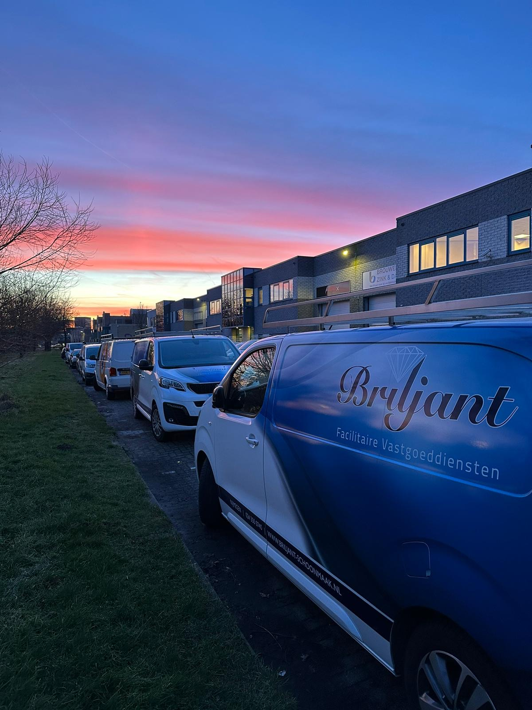

Schoonmaak en bedrijfshygiëne in Nijmegen
Briljant in elk facet.
Wij maken uw kantoor, ramen en sanitair schoon op het moment dat het u uitkomt. Wij denken vanuit uw rooster, niet vanuit het onze.

Schoonmaken is ons vak.
Flexibel betekent voor ons vooral meedenken. Wij redeneren niet vanuit óns rooster, maar vanuit het uwe. Niet vanuit onze mogelijkheden, maar vanuit uw wensen.
Flexibel
Wij werken op het moment en de manier die u het beste uitkomt, ook bij bijzondere omstandigheden.
Deskundig
Altijd volgens de nieuwste ontwikkelingen in schoonmaak, onderhoud en milieu, en volgens de strengste ISO-normen.
Betrouwbaar
U krijgt alleen deskundige, gemotiveerde en goed getrainde medewerkers over de vloer.
Alles voor een verzorgd pand
Advies op maat vragenSchoonmaak
Dagelijkse schoonmaak van kantoren en gebouwen, en specialistisch werk na verbouw, brand of waterschade.
Bekijk schoonmaak
Glazenwasserij
Ramen tot 15 meter hoog vanaf de grond met de telescoop. Hoger met de eigen hoogwerker.
Bekijk glazenwasserijBedrijfshygiëne
Stijlvolle dispensers voor uw sanitair, met twee keer per jaar gratis dieptereiniging bij een abonnement.
Bekijk bedrijfshygiëneServicediensten
Koeriers, interne verhuizing, klussen en kantine. Alles wat niet tot uw kern hoort.
Bekijk servicediensten
Facilitair
Inloopmatten, vlaggen, borden en bewegwijzering in de stijl van uw bedrijf.
Bekijk facilitairTelescoop-glasbewassing
Vijftien meter glas. Geen ladder nodig.
Met een lichtgewicht telescoopsteel en een slang aan onze aanhanger wassen wij ramen tot op de vierde etage, gewoon vanaf de grond. Geen gesjouw met ladders, geen hoogwerker die verplaatst moet worden.
- 2 tot 4
- keer zo snel klaar
- 0
- chemicaliën, alleen water
- 15 m
- glas, kozijnen, gevels en zonwering
De schoonstmakers uit Nijmegen.
Zo staat het op onze hoogwerker. Vanaf Kerkenbos rijden onze bussen elke werkdag uit.
2×
per jaar een gratis dieptereiniging van uw toiletgroep
Complete toilethygiëne
Een sanitairgroep die altijd verzorgd oogt.
Sluit u een abonnement af op complete toilethygiëne, dan reinigen wij uw toiletgroep twee keer per jaar gratis in de diepte met onze fantomatmethode. Daarbij horen stijlvolle dispensers voor handdoeken, zeep, toiletpapier en luchtverfrissing.
Bekijk bedrijfshygiëneNeem de proef op de som.
Overweegt u uw schoonmaak bij Briljant onder te brengen? Laat ons een gratis schoonmaakproef afleggen. Omdat wij precies aanpakken wat u belangrijk vindt, is de kans groot dat uw schoonmaakkosten lager uitvallen. Dat ziet u terug in onze offerte.